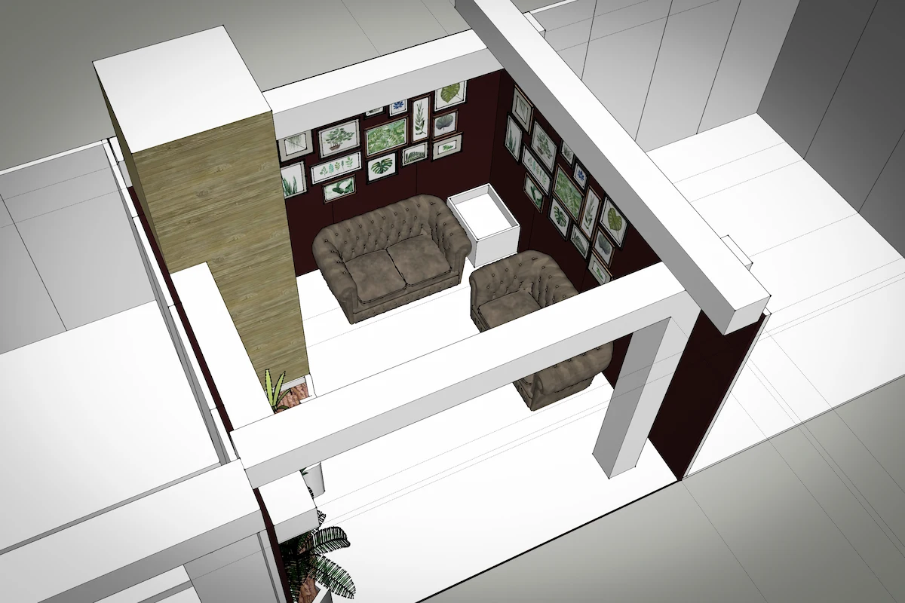
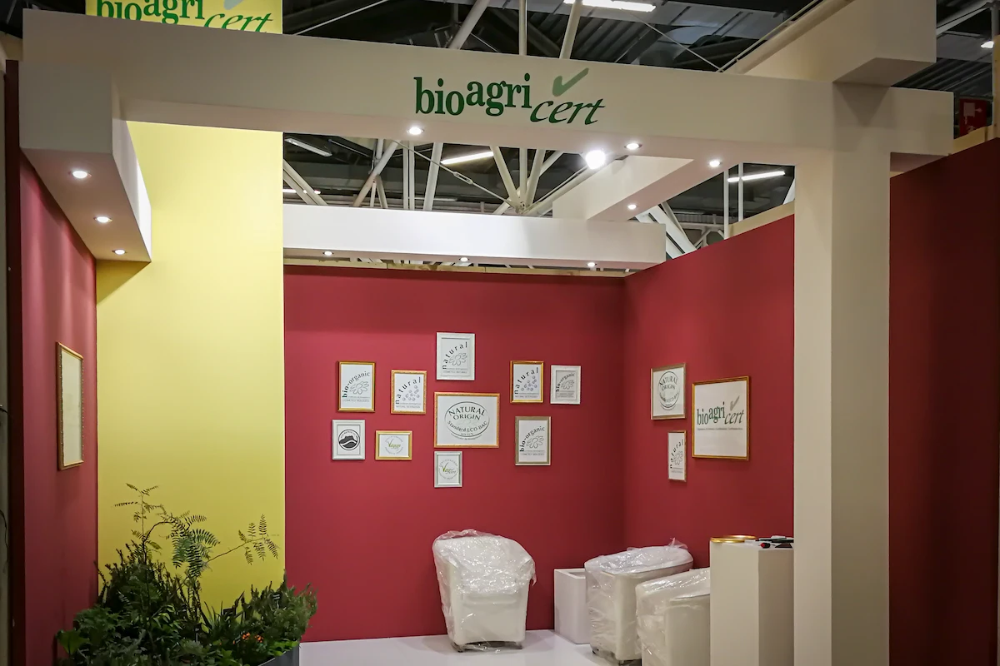
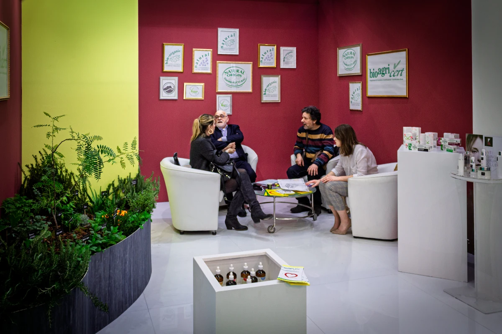
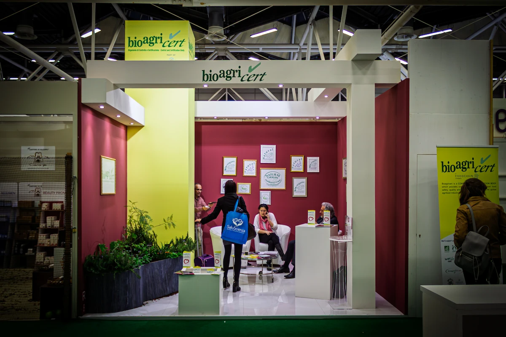

Sottotitolo, luogo o cliente
Come si trasforma un’area minima di soli 16 metri quadrati in uno spazio che comunichi autorevolezza e accoglienza? La sfida per il Cosmoprof 2019 è stata quella di rompere gli schemi del classico stand "ufficio" per abbracciare l'estetica di un salotto privato retrò.
Per Bioagricert, ente leader nella certificazione biologica, abbiamo scelto di nobilitare i loghi aziendali: non semplici stampe su pannello, ma veri e propri quadri incorniciati. La parete di fondo, dalle tonalità calde e profonde, diventa una galleria d'arte domestica che trasmette solidità e storia, allontanandosi dalla freddezza tipica dell'usa-e-getta fieristico.
Pochi elementi strutturali, ma decisi: portali bianchi che definiscono il volume senza chiuderlo e un angolo verde rigoglioso che ricorda l'anima "bio" del cliente. Un design democratico nell'approccio, ma dal carattere elitario nell'atmosfera, progettato per essere montato con rapidità e minimi sprechi.



